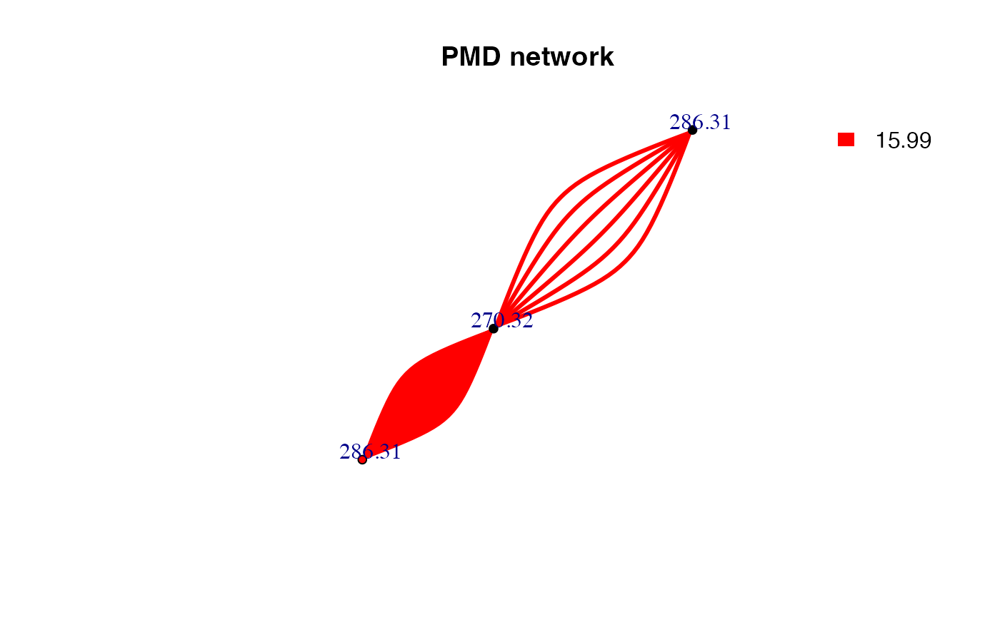
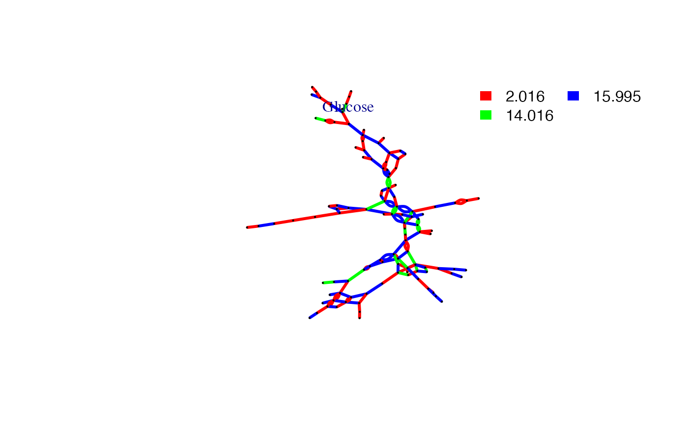

PMD based Reactomics tried to evaluate untargeted HRMS profiles at reaction level. Reactomics is the extension of structure/reaction directed analysis for HRMS data and PMDs are treated as relationship unit for further discussion as compounds for metabolomics. Reaction level evaluation could be found in PMD network analysis, Source appointment and biomarker reaction discovery.
PMD network analysis
In untargeted metabolites profiles from HRMS, two ions or peaks could be treated together as long as they could be connected by relationship. Regular untargeted workflow prefers intensity correlation between compounds. However, PMD could also be the chemical bridge between two compounds or ions. For example, oxidation would add oxygen atom to the parent compound and introduce a PMD 15.995 Da. Meanwhile, One peak or compound could be involved in multiple reactions. In this case, we could build PMD network for certain ion or compound.
However, we need to the PMDs list to build such network for either one compound or one sample. One way is using the high frequency PMDs list from previous reported reactions and another way is using the high frequency PMDs within certain data set such as KEGG or HMDB. The former way try to focus on known reactions such as Phase I reactions for exogenous compounds while the latter way is useful to explorer new reactions or unknown reaction patterns within the data set. The latter way is actually the structure/reaction directed analysis.
PMD network analysis is the analysis to check or explorer the PMD relationship among co-existed ions from one sample or multiple samples. The edge between ions in the network means certain PMD relationship are valid in this data set. Meanwhile, the intensity correlation between paired ions could also be considered to connect the vertices. Such network is build based on local recursive search for all possible connections.
PMD network analysis is useful to screen metabolites. Regular metabolites discovery method try to predict metabolites’ MS2 spectra and then match the data. In PMD network analysis, metabolites are predicted by high frequency PMD or preferred PMD list within the MS1 data and such prediction could be extended to the metabolites of metabolites. Such PMD search will stop when no new metabolites could be connected to the network. Such searching method is much easier and quick to get the overview of metabolites networks. Identification could follow the discovery from MS1 data.
If you have a specific compound and want to check the metabolites of
certain PMD, you could use getchain to extract the network
of that compounds
library(igraph)
#>
#> Attaching package: 'igraph'
#> The following objects are masked from 'package:stats':
#>
#> decompose, spectrum
#> The following object is masked from 'package:base':
#>
#> union
# check metabolites of C18H39NO
# Use common PMDs for biological reactions
chain <- getchain(spmeinvivo,diff = c(2.02,14.02,15.99,58.04,13.98),mass = 286.3101,digits = 2,corcutoff = 0)
# show as network
net <- graph_from_data_frame(chain$sdac,directed = F)
pal <- grDevices::rainbow(5)
plot(net,vertex.label=round(as.numeric(V(net)$name),2),vertex.size =5,edge.width = 3,edge.color = pal[as.numeric(as.factor(E(net)$diff2))],vertex.label.dist=1,vertex.color=ifelse(round(as.numeric(V(net)$name),4) %in% 286.3101,'red','black'), main = 'PMD network')
legend("topright",bty = "n",
legend=unique(E(net)$diff2),
fill=unique(pal[as.numeric(as.factor(E(net)$diff2))]), border=NA,horiz = F)
# Consider the correlation coefficient cutoff
chain <- getchain(spmeinvivo,diff = c(2.02,14.02,15.99,58.04,13.98),mass = 286.3101,digits = 2,corcutoff = 0.6)
# show as network
net <- graph_from_data_frame(chain$sdac,directed = F)
pal <- grDevices::rainbow(5)
plot(net,vertex.label=round(as.numeric(V(net)$name),2),vertex.size =5,edge.width = 3,edge.color = pal[as.numeric(as.factor(E(net)$diff2))],vertex.label.dist=1,vertex.color=ifelse(round(as.numeric(V(net)$name),4) %in% 286.3101,'red','black'), main = 'PMD network')
legend("topright",bty = "n",
legend=unique(E(net)$diff2),
fill=unique(pal[as.numeric(as.factor(E(net)$diff2))]), border=NA,horiz = F)
Here only three PMD relationship could be found for C18H39NO. The duplicate edges between two vertices or self-loop edges mean isomer related PMD reactions. If we consider the correlation, the network would be trimmed. Since reaction might not always involve correlation, PMD network analysis could found more potential metabolites.
If you want to see all the independent peaks’ high frequency PMDs as networks for certain sample, the following code will help. This part will use the high frequency PMDs cutoff 12 from the data to build the networks for all the independent peaks.
std <- globalstd(spmeinvivo,sda = F)
#> 75 retention time clusters found.
#> Using ng = 15
#> 5 unique PMDs retained.
#> The unique within RT clusters high frequency PMD(s) is(are) 28.03 21.98 44.03 17.03 18.01.
#> 409 isotope peaks found.
#> 109 multiple charged isotope peaks found.
#> 251 multiple charged peaks found.
#> 346 paired peaks found.
#> 8 group(s) have single peaks 14 23 32 33 54 55 56 75
#> 11 group(s) with multiple peaks while no isotope/paired relationship 4 5 7 8 11 ... 42 49 68 72 73
#> 9 group(s) with isotope without paired relationship 2 9 22 26 52 62 64 66 70
#> 4 group(s) with paired without isotope relationship 1 10 15 18
#> 43 group(s) with both paired and isotope relationship 3 6 12 13 16 ... 65 67 69 71 74
#> 292 standard masses identified.
sda <- getsda(std,freqcutoff = 12)
#> 5 groups were found as high frequency PMD group.
#> 0 was found as high frequency PMD.
#> 2.02 was found as high frequency PMD.
#> 28.03 was found as high frequency PMD.
#> 30.05 was found as high frequency PMD.
#> 58.04 was found as high frequency PMD.
df <- sda$sda
net <- graph_from_data_frame(df,directed = F)
pal <- grDevices::rainbow(length(unique(E(net)$diff2)))
plot(net,vertex.label=NA,vertex.size = 5,edge.width = 3,edge.color = pal[as.numeric(as.factor(E(net)$diff2))],main = 'PMD network')
legend("topright",bty = "n",
legend=unique(E(net)$diff2),
fill=unique(pal[as.numeric(as.factor(E(net)$diff2))]), border=NA,horiz = F)
Here we could find clusters of metabolites. We could detect such network community structure.
# network community structure detection
ceb <- cluster_edge_betweenness(net,weights = abs(E(net)$cor), directed = F)
#> Warning in cluster_edge_betweenness(net, weights = abs(E(net)$cor), directed =
#> F): At vendor/cigraph/src/community/edge_betweenness.c:504 : Membership vector
#> will be selected based on the highest modularity score.
plot(ceb, net,vertex.label=NA,vertex.size = 5,edge.width = 3,) 
# output membership
head(cbind(ceb$membership,ceb$names))
#> [,1] [,2]
#> [1,] "1" "146.118268664153"
#> [2,] "1" "174.148913040161"
#> [3,] "2" "175.148206702548"
#> [4,] "2" "177.164038300588"
#> [5,] "2" "177.163608624184"
#> [6,] "3" "200.200536606252"Such network could also be build on correlation directed analysis which use correlation between paired peaks to build network.
cbp <- enviGCMS::getfilter(std,rowindex = std$stdmassindex)
cda <- getcda(cbp)
df <- cda$cda
# filter based on retention time differences larger than 2 mins
df <- df[df$diffrt>120,]
netc <- graph_from_data_frame(df,directed = F)
plot(netc,vertex.label=NA,vertex.size = 5,edge.width = 3,main = 'Correlation network')
As shown above, correlation network without PMD might merge into one big network, which lose the details of chemical reactions.
Shiny application
The PMD network for certain compound could be generated by run
runPMDnet().
Source appointment
Peaks from samples could be from endogenous compounds or exogenous compounds. However, it’s hard to tell for untargeted analysis. In terms of PMD, if one peak belongs to a high frequency PMD network, it means a relatively high activity. If such sample belongs to a biological specimen, it might be endogenous compound. If a peak show no PMD network with other peaks, the biological system might not have enzyme to make reaction happen. Exogenous compounds will show a lower degree since they are xenobiotics. Since most of the peaks will show a low degree, the median of the degree could be used as cutoff. Then we could make source appointment if the assumption is hold.
deg <- degree(net, mode = 'all')
median(deg)
#> [1] 1
endogenous <- names(deg)[deg>median(deg)]
exogenous <- names(deg)[deg<=median(deg)]In this case, we will have 43 endogenous compounds while 44 exogenous compounds. When you find a peak show differences between groups, you could check the degree to infer its sources.
Another parameter would be the average network distances. Endogenous compounds could form a larger network with long average network distances while exogenous compounds will connected to network with small average network distances. Such parameter could be used to determine the source of unknown compound by checking the average network distances of the compounds PMD network.
Be careful, one compound could be endogenous for one sample while exogenous for another sample. In this case, PMD network would give hints on the sources based on the context of the samples.
Biomarker reaction
Biomarker always means biomarker compounds. However, if we could
quantify the reaction relationship, we could use biomarker reaction to
trace certain biological process. You could use getreact to
extract the ion pairs shared the same PMD and intensity ratio RSD% lower
than certain cutoff. Then the sum of the intensity of all PMD pairs’
ions could be used to compare the reaction level changes among
samples.
pmd <- getreact(spmeinvivo,pmd=15.99)
# show the ions with the same PMD
head(pmd$pmd)
#> ms1 ms2 diff rt1 rt2 diffrt rtg1 rtg2 rtgdiff
#> 109378 174.1489 158.1546 15.99434 337.418 470.364 132.946 44 31 13
#> 114898 175.1481 159.1575 15.99055 614.413 470.364 144.049 17 31 14
#> 212776 209.1552 193.1632 15.99202 611.412 337.633 273.779 17 44 27
#> 219286 211.1695 195.1745 15.99491 614.625 594.485 20.140 17 46 29
#> 255283 228.1973 212.2025 15.99473 453.157 639.100 185.943 45 13 32
#> 290503 244.1921 228.1973 15.99486 614.842 453.157 161.685 17 45 28
#> cor diff2 r rh rl
#> 109378 0.9247231 15.99 25.01946 48.53964 28.03499
#> 114898 0.9164059 15.99 18.12926 35.13135 25.48822
#> 212776 0.7567381 15.99 29.09434 38.95531 41.61674
#> 219286 0.7378409 15.99 26.62548 33.46165 61.56227
#> 255283 0.9749689 15.99 6.76019 30.01754 26.76093
#> 290503 0.9670674 15.99 17.96722 42.20945 30.01754
# show the corresponding quantitative PMD data across samples, each row show the sum of intensity of paired masses qualified for stable mass pairs
head(pmd$pmddata)
#> 1405_Fish1_F1 1405_Fish1_F2 1405_Fish1_F3 1405_Fish2_F1 1405_Fish2_F2
#> 174.1/337 18327.863 11388.643 15368.711 9068.557 19759.098
#> 175.1/614 6746.288 4237.569 6581.992 3085.251 6108.837
#> 209.2/611 30644.459 19496.458 33519.253 11647.966 31169.817
#> 211.2/615 5958.334 4270.901 6285.724 2757.028 6065.346
#> 228.2/453 29245.928 21199.245 38668.407 16822.114 36020.058
#> 244.2/615 41582.379 30025.253 57302.819 20846.835 51716.437
#> 1405_Fish2_F3 1405_Fish3_F1 1405_Fish3_F2 1405_Fish3_F3
#> 174.1/337 12995.786 16878.397 18647.770 25557.292
#> 175.1/614 3420.075 6435.200 7535.579 8806.608
#> 209.2/611 14064.021 29421.515 38893.482 43313.165
#> 211.2/615 3041.366 5809.946 8795.206 8089.021
#> 228.2/453 19484.297 32281.370 36797.052 39304.713
#> 244.2/615 24315.314 45535.922 59156.064 61720.089If your data don’t have retention time, reaction level change can also be checked.
spmeinvivo$rt <- NULL
pmd <- getreact(spmeinvivo,pmd=15.99)
#> Warning in as.numeric(ratio1)/as.numeric(ratio2): longer object length is not a
#> multiple of shorter object length
#> Warning in as.numeric(ratio1)/as.numeric(ratio2): longer object length is not a
#> multiple of shorter object length
#> Warning in as.numeric(ratio1)/as.numeric(ratio2): longer object length is not a
#> multiple of shorter object length
#> Warning in as.numeric(ratio1)/as.numeric(ratio2): longer object length is not a
#> multiple of shorter object length
#> Warning in as.numeric(ratio1)/as.numeric(ratio2): longer object length is not a
#> multiple of shorter object length
#> Warning in as.numeric(ratio1)/as.numeric(ratio2): longer object length is not a
#> multiple of shorter object length
#> Warning in as.numeric(ratio1)/as.numeric(ratio2): longer object length is not a
#> multiple of shorter object length
#> Warning in as.numeric(ratio1)/as.numeric(ratio2): longer object length is not a
#> multiple of shorter object length
#> Warning in as.numeric(ratio1)/as.numeric(ratio2): longer object length is not a
#> multiple of shorter object length
#> Warning in as.numeric(ratio1)/as.numeric(ratio2): longer object length is not a
#> multiple of shorter object length
#> Warning in as.numeric(ratio1)/as.numeric(ratio2): longer object length is not a
#> multiple of shorter object length
#> Warning in as.numeric(ratio1)/as.numeric(ratio2): longer object length is not a
#> multiple of shorter object length
#> Warning in as.numeric(ratio1)/as.numeric(ratio2): longer object length is not a
#> multiple of shorter object length
#> Warning in as.numeric(ratio1)/as.numeric(ratio2): longer object length is not a
#> multiple of shorter object length
#> Warning in as.numeric(ratio1)/as.numeric(ratio2): longer object length is not a
#> multiple of shorter object length
#> Warning in as.numeric(ratio1)/as.numeric(ratio2): longer object length is not a
#> multiple of shorter object length
#> Warning in as.numeric(ratio1)/as.numeric(ratio2): longer object length is not a
#> multiple of shorter object length
#> Warning in as.numeric(ratio1)/as.numeric(ratio2): longer object length is not a
#> multiple of shorter object length
#> Warning in as.numeric(ratio1)/as.numeric(ratio2): longer object length is not a
#> multiple of shorter object length
#> Warning in as.numeric(ratio1)/as.numeric(ratio2): longer object length is not a
#> multiple of shorter object length
#> Warning in as.numeric(ratio1)/as.numeric(ratio2): longer object length is not a
#> multiple of shorter object length
#> Warning in as.numeric(ratio1)/as.numeric(ratio2): longer object length is not a
#> multiple of shorter object length
#> Warning in as.numeric(ratio1)/as.numeric(ratio2): longer object length is not a
#> multiple of shorter object length
#> Warning in as.numeric(ratio1)/as.numeric(ratio2): longer object length is not a
#> multiple of shorter object length
#> Warning in as.numeric(ratio1)/as.numeric(ratio2): longer object length is not a
#> multiple of shorter object length
#> Warning in as.numeric(ratio1)/as.numeric(ratio2): longer object length is not a
#> multiple of shorter object length
#> Warning in as.numeric(ratio1)/as.numeric(ratio2): longer object length is not a
#> multiple of shorter object length
#> Warning in as.numeric(ratio1)/as.numeric(ratio2): longer object length is not a
#> multiple of shorter object length
#> Warning in as.numeric(ratio1)/as.numeric(ratio2): longer object length is not a
#> multiple of shorter object length
#> Warning in as.numeric(ratio1)/as.numeric(ratio2): longer object length is not a
#> multiple of shorter object length
#> Warning in as.numeric(ratio1)/as.numeric(ratio2): longer object length is not a
#> multiple of shorter object length
#> Warning in as.numeric(ratio1)/as.numeric(ratio2): longer object length is not a
#> multiple of shorter object length
#> Warning in as.numeric(ratio1)/as.numeric(ratio2): longer object length is not a
#> multiple of shorter object length
#> Warning in as.numeric(ratio1)/as.numeric(ratio2): longer object length is not a
#> multiple of shorter object length
#> Warning in as.numeric(ratio1)/as.numeric(ratio2): longer object length is not a
#> multiple of shorter object length
#> Warning in as.numeric(ratio1)/as.numeric(ratio2): longer object length is not a
#> multiple of shorter object length
#> Warning in as.numeric(ratio1)/as.numeric(ratio2): longer object length is not a
#> multiple of shorter object length
#> Warning in as.numeric(ratio1)/as.numeric(ratio2): longer object length is not a
#> multiple of shorter object length
#> Warning in as.numeric(ratio1)/as.numeric(ratio2): longer object length is not a
#> multiple of shorter object length
#> Warning in as.numeric(ratio1)/as.numeric(ratio2): longer object length is not a
#> multiple of shorter object length
#> Warning in as.numeric(ratio1)/as.numeric(ratio2): longer object length is not a
#> multiple of shorter object length
#> Warning in as.numeric(ratio1)/as.numeric(ratio2): longer object length is not a
#> multiple of shorter object length
#> Warning in as.numeric(ratio1)/as.numeric(ratio2): longer object length is not a
#> multiple of shorter object length
#> Warning in as.numeric(ratio1)/as.numeric(ratio2): longer object length is not a
#> multiple of shorter object length
#> Warning in as.numeric(ratio1)/as.numeric(ratio2): longer object length is not a
#> multiple of shorter object length
#> Warning in as.numeric(ratio1)/as.numeric(ratio2): longer object length is not a
#> multiple of shorter object length
#> Warning in as.numeric(ratio1)/as.numeric(ratio2): longer object length is not a
#> multiple of shorter object length
#> Warning in as.numeric(ratio1)/as.numeric(ratio2): longer object length is not a
#> multiple of shorter object length
#> Warning in as.numeric(ratio1)/as.numeric(ratio2): longer object length is not a
#> multiple of shorter object length
#> Warning in as.numeric(ratio1)/as.numeric(ratio2): longer object length is not a
#> multiple of shorter object length
#> Warning in as.numeric(ratio1)/as.numeric(ratio2): longer object length is not a
#> multiple of shorter object length
#> Warning in as.numeric(ratio1)/as.numeric(ratio2): longer object length is not a
#> multiple of shorter object length
#> Warning in as.numeric(ratio1)/as.numeric(ratio2): longer object length is not a
#> multiple of shorter object length
#> Warning in as.numeric(ratio1)/as.numeric(ratio2): longer object length is not a
#> multiple of shorter object length
#> Warning in as.numeric(ratio1)/as.numeric(ratio2): longer object length is not a
#> multiple of shorter object length
#> Warning in as.numeric(ratio1)/as.numeric(ratio2): longer object length is not a
#> multiple of shorter object length
#> Warning in as.numeric(ratio1)/as.numeric(ratio2): longer object length is not a
#> multiple of shorter object length
#> Warning in as.numeric(ratio1)/as.numeric(ratio2): longer object length is not a
#> multiple of shorter object length
#> Warning in as.numeric(ratio1)/as.numeric(ratio2): longer object length is not a
#> multiple of shorter object length
#> Warning in as.numeric(ratio1)/as.numeric(ratio2): longer object length is not a
#> multiple of shorter object length
#> Warning in as.numeric(ratio1)/as.numeric(ratio2): longer object length is not a
#> multiple of shorter object length
#> Warning in as.numeric(ratio1)/as.numeric(ratio2): longer object length is not a
#> multiple of shorter object length
#> Warning in as.numeric(ratio1)/as.numeric(ratio2): longer object length is not a
#> multiple of shorter object length
#> Warning in as.numeric(ratio1)/as.numeric(ratio2): longer object length is not a
#> multiple of shorter object length
#> Warning in as.numeric(ratio1)/as.numeric(ratio2): longer object length is not a
#> multiple of shorter object length
#> Warning in as.numeric(ratio1)/as.numeric(ratio2): longer object length is not a
#> multiple of shorter object length
#> Warning in as.numeric(ratio1)/as.numeric(ratio2): longer object length is not a
#> multiple of shorter object length
#> Warning in as.numeric(ratio1)/as.numeric(ratio2): longer object length is not a
#> multiple of shorter object length
#> Warning in as.numeric(ratio1)/as.numeric(ratio2): longer object length is not a
#> multiple of shorter object length
#> Warning in as.numeric(ratio1)/as.numeric(ratio2): longer object length is not a
#> multiple of shorter object length
#> Warning in as.numeric(ratio1)/as.numeric(ratio2): longer object length is not a
#> multiple of shorter object length
#> Warning in as.numeric(ratio1)/as.numeric(ratio2): longer object length is not a
#> multiple of shorter object length
#> Warning in as.numeric(ratio1)/as.numeric(ratio2): longer object length is not a
#> multiple of shorter object length
#> Warning in as.numeric(ratio1)/as.numeric(ratio2): longer object length is not a
#> multiple of shorter object length
#> Warning in as.numeric(ratio1)/as.numeric(ratio2): longer object length is not a
#> multiple of shorter object length
#> Warning in as.numeric(ratio1)/as.numeric(ratio2): longer object length is not a
#> multiple of shorter object length
#> Warning in as.numeric(ratio1)/as.numeric(ratio2): longer object length is not a
#> multiple of shorter object length
#> Warning in as.numeric(ratio1)/as.numeric(ratio2): longer object length is not a
#> multiple of shorter object length
#> Warning in as.numeric(ratio1)/as.numeric(ratio2): longer object length is not a
#> multiple of shorter object length
#> Warning in as.numeric(ratio1)/as.numeric(ratio2): longer object length is not a
#> multiple of shorter object length
#> Warning in as.numeric(ratio1)/as.numeric(ratio2): longer object length is not a
#> multiple of shorter object length
#> Warning in as.numeric(ratio1)/as.numeric(ratio2): longer object length is not a
#> multiple of shorter object length
#> Warning in as.numeric(ratio1)/as.numeric(ratio2): longer object length is not a
#> multiple of shorter object length
#> Warning in as.numeric(ratio1)/as.numeric(ratio2): longer object length is not a
#> multiple of shorter object length
#> Warning in as.numeric(ratio1)/as.numeric(ratio2): longer object length is not a
#> multiple of shorter object length
#> Warning in as.numeric(ratio1)/as.numeric(ratio2): longer object length is not a
#> multiple of shorter object length
#> Warning in as.numeric(ratio1)/as.numeric(ratio2): longer object length is not a
#> multiple of shorter object length
#> Warning in as.numeric(ratio1)/as.numeric(ratio2): longer object length is not a
#> multiple of shorter object length
#> Warning in as.numeric(ratio1)/as.numeric(ratio2): longer object length is not a
#> multiple of shorter object length
#> Warning in as.numeric(ratio1)/as.numeric(ratio2): longer object length is not a
#> multiple of shorter object length
#> Warning in as.numeric(ratio1)/as.numeric(ratio2): longer object length is not a
#> multiple of shorter object length
#> Warning in as.numeric(ratio1)/as.numeric(ratio2): longer object length is not a
#> multiple of shorter object length
#> Warning in as.numeric(ratio1)/as.numeric(ratio2): longer object length is not a
#> multiple of shorter object length
#> Warning in as.numeric(ratio1)/as.numeric(ratio2): longer object length is not a
#> multiple of shorter object length
#> Warning in as.numeric(ratio1)/as.numeric(ratio2): longer object length is not a
#> multiple of shorter object length
#> Warning in as.numeric(ratio1)/as.numeric(ratio2): longer object length is not a
#> multiple of shorter object length
# show the ions with the same PMD
head(pmd$pmd)
#> ms1 ms2 diff cor diff2 r rh rl
#> 109378 174.1489 158.1546 15.99434 0.9247231 15.99 25.01946 48.53964 28.03499
#> 114898 175.1481 159.1575 15.99055 0.9164059 15.99 18.12926 35.13135 25.48822
#> 212776 209.1552 193.1632 15.99202 0.7567381 15.99 29.09434 38.95531 41.61674
#> 219286 211.1695 195.1745 15.99491 0.7378409 15.99 26.62548 33.46165 61.56227
#> 255283 228.1973 212.2025 15.99473 0.9749689 15.99 6.76019 30.01754 26.76093
#> 290503 244.1921 228.1973 15.99486 0.9670674 15.99 17.96722 42.20945 30.01754
# show the corresponding quantitative PMD data across samples, each row show the sum of intensity of paired masses qualified for stable mass pairs
head(pmd$pmddata)
#> 1405_Fish1_F1 1405_Fish1_F2 1405_Fish1_F3 1405_Fish2_F1 1405_Fish2_F2
#> 174.1/337 18327.863 11388.643 15368.711 9068.557 19759.098
#> 175.1/614 6746.288 4237.569 6581.992 3085.251 6108.837
#> 209.2/611 30644.459 19496.458 33519.253 11647.966 31169.817
#> 211.2/615 5958.334 4270.901 6285.724 2757.028 6065.346
#> 228.2/453 29245.928 21199.245 38668.407 16822.114 36020.058
#> 244.2/615 41582.379 30025.253 57302.819 20846.835 51716.437
#> 1405_Fish2_F3 1405_Fish3_F1 1405_Fish3_F2 1405_Fish3_F3
#> 174.1/337 12995.786 16878.397 18647.770 25557.292
#> 175.1/614 3420.075 6435.200 7535.579 8806.608
#> 209.2/611 14064.021 29421.515 38893.482 43313.165
#> 211.2/615 3041.366 5809.946 8795.206 8089.021
#> 228.2/453 19484.297 32281.370 36797.052 39304.713
#> 244.2/615 24315.314 45535.922 59156.064 61720.089Now we have two methods to compute the quantitative PMD responses and user should select method depending on research purposes. ‘static’ will only consider the stable mass pairs across samples and such reactions will be limited by the enzyme or other factors than substrates. ‘dynamic’ will consider the unstable paired masses by normalization the relatively unstable peak with stable peak between paired masses and such reactions will be limited by one or both peaks in the paired masses.
data("spmeinvivo")
pmd <- getreact(spmeinvivo,pmd=15.99,method = 'dynamic')
# show the ions with the same PMD
head(pmd$pmd)
#> ms1 ms2 diff rt1 rt2 diffrt rtg1 rtg2 rtgdiff
#> 43332 147.9900 132.0050 15.98503 145.0880 49.4910 95.5970 20 4 16
#> 77336 162.1128 146.1183 15.99455 256.1585 288.1300 31.9715 5 23 18
#> 103842 172.1705 156.1777 15.99279 478.9360 405.3890 73.5470 43 30 13
#> 121772 177.0914 161.0967 15.99477 574.3390 490.7225 83.6165 39 37 2
#> 140886 183.0809 167.0901 15.99080 533.7950 511.2940 22.5010 48 12 36
#> 143601 184.9858 168.9988 15.98695 85.4930 135.4660 49.9730 2 41 39
#> cor diff2 r rh rl
#> 43332 0.41231393 15.99 34.86972 27.176089 39.84553
#> 77336 0.95185232 15.99 30.42748 89.272157 84.24422
#> 103842 0.64609844 15.99 56.74081 50.385313 42.86262
#> 121772 -0.07743575 15.99 100.61906 8.080905 43.90465
#> 140886 0.54183684 15.99 38.29089 16.749724 42.53298
#> 143601 -0.36694067 15.99 46.87352 18.159277 40.61084
# show the corresponding quantitative PMD data across samples, each row show the sum of intensity of paired masses qualified for stable mass pairs
head(pmd$pmddata)
#> 1405_Fish1_F1 1405_Fish1_F2 1405_Fish1_F3 1405_Fish2_F1 1405_Fish2_F2
#> 1 0.01999437 0.016242675 0.01880472 0.006371798 0.024304585
#> 2 1.53528194 0.962295635 1.10219074 0.982190726 1.604363528
#> 3 0.46404167 1.194387570 1.06934597 0.250054581 0.509676599
#> 4 1.20386141 1.669736528 1.32468366 1.213218611 1.083057203
#> 5 0.01461837 0.006770954 0.01055026 0.009490853 0.008958319
#> 6 9.26463385 12.763610562 3.97502609 14.657795223 4.041131973
#> 1405_Fish2_F3 1405_Fish3_F1 1405_Fish3_F2 1405_Fish3_F3
#> 1 0.01309609 0.011523649 0.011596937 0.017668097
#> 2 1.43917818 1.064822325 1.846236771 2.609787311
#> 3 1.01508469 0.406659176 0.874861257 0.621074214
#> 4 2.05169832 7.765315730 0.832736564 2.117740805
#> 5 0.01549754 0.007511291 0.005490916 0.005883117
#> 6 9.12757512 7.779539564 7.970752923 4.004298286You can also output the quantitative results of all high frequency PMDs existing in the data.
data("spmeinvivo")
# remove redundant peaks
list <- globalstd(spmeinvivo,sda = T)
#> 75 retention time clusters found.
#> Using ng = 15
#> 5 unique PMDs retained.
#> The unique within RT clusters high frequency PMD(s) is(are) 28.03 21.98 44.03 17.03 18.01.
#> 409 isotope peaks found.
#> 109 multiple charged isotope peaks found.
#> 251 multiple charged peaks found.
#> 346 paired peaks found.
#> 8 group(s) have single peaks 14 23 32 33 54 55 56 75
#> 11 group(s) with multiple peaks while no isotope/paired relationship 4 5 7 8 11 ... 42 49 68 72 73
#> 9 group(s) with isotope without paired relationship 2 9 22 26 52 62 64 66 70
#> 4 group(s) with paired without isotope relationship 1 10 15 18
#> 43 group(s) with both paired and isotope relationship 3 6 12 13 16 ... 65 67 69 71 74
#> 292 standard masses identified.
#> PMD frequency cutoff is 9 by PMD network analysis with largest network average distance 7.26 .
#> 8 groups were found as high frequency PMD group.
#> 0 was found as high frequency PMD.
#> 2.02 was found as high frequency PMD.
#> 12 was found as high frequency PMD.
#> 28.03 was found as high frequency PMD.
#> 30.05 was found as high frequency PMD.
#> 42.05 was found as high frequency PMD.
#> 58.04 was found as high frequency PMD.
#> 116.08 was found as high frequency PMD.
newlist <- enviGCMS::getfilter(list,rowindex = list$stdmassindex)
# get high frequency pmd
hfpmd <- unique(newlist$sda$diff2)
# generate quantitative results
pmd <- getreact(newlist,pmd=hfpmd)
# output the kegg pmd in the data
table(pmd$pmd$diff2)
#>
#> 0 2.02 12 28.03 30.05 42.05 58.04 116.08
#> 1 5 7 2 3 1 7 6
# output quantitative result for each PMD
head(pmd$pmddata)
#> 1405_Fish1_F1 1405_Fish1_F2 1405_Fish1_F3 1405_Fish2_F1 1405_Fish2_F2
#> 170.2/639 17657.002 10935.830 15380.652 9027.136 18341.408
#> 200.2/522 76781.538 40625.840 77922.531 28510.920 79221.245
#> 175.1/453 12187.331 7656.765 9018.779 4548.020 11727.140
#> 200.2/522 61813.393 31627.099 65896.736 20760.813 63841.615
#> 177.2/639 4686.268 2755.558 4957.270 1745.660 5051.758
#> 326.3/648 13541.352 6479.068 15770.972 4922.571 13168.677
#> 1405_Fish2_F3 1405_Fish3_F1 1405_Fish3_F2 1405_Fish3_F3
#> 170.2/639 12706.833 16722.20 17964.151 23711.077
#> 200.2/522 40736.977 68844.35 83690.730 91978.112
#> 175.1/453 6574.599 13444.25 13759.136 14974.739
#> 200.2/522 29724.524 54917.81 68598.302 72047.813
#> 177.2/639 3041.635 4707.46 4765.946 5272.995
#> 326.3/648 6065.289 11440.63 14695.065 16218.608
# output quantitative result for unique PMD
upmd <- aggregate(pmd$pmddata, by=list(pmd$pmd$diff2),sum)
# column for samples and row for unique PMD
head(upmd)
#> Group.1 1405_Fish1_F1 1405_Fish1_F2 1405_Fish1_F3 1405_Fish2_F1 1405_Fish2_F2
#> 1 0.00 53022.83 23456.56 20941.85 14903.71 63222.37
#> 2 2.02 7636291.25 6153071.05 7977403.59 4868105.03 7982139.69
#> 3 12.00 15486878.05 12519952.24 16356055.31 9935017.30 16237029.99
#> 4 28.03 37091.72 31173.62 56537.52 21134.78 53606.36
#> 5 30.05 77903.78 50845.03 94997.88 33333.63 93912.86
#> 6 42.05 76781.54 40625.84 77922.53 28510.92 79221.24
#> 1405_Fish2_F3 1405_Fish3_F1 1405_Fish3_F2 1405_Fish3_F3
#> 1 26320.58 65507.97 59418.19 44340.68
#> 2 5841264.15 7414502.27 8077803.96 8736106.60
#> 3 11909674.43 15053630.97 16433254.95 17779902.00
#> 4 26536.18 35353.86 54167.11 60799.07
#> 5 45257.00 72396.51 99610.92 104228.58
#> 6 40736.98 68844.35 83690.73 91978.11You can also output the quantitative results of all PMDs existing in current KEGG database.
# output all existing PMD in KEGG
keggpmd <- unique(round(keggrall$pmd,2))
data("spmeinvivo")
# remove redundant peaks
list <- globalstd(spmeinvivo)
#> 75 retention time clusters found.
#> Using ng = 15
#> 5 unique PMDs retained.
#> The unique within RT clusters high frequency PMD(s) is(are) 28.03 21.98 44.03 17.03 18.01.
#> 409 isotope peaks found.
#> 109 multiple charged isotope peaks found.
#> 251 multiple charged peaks found.
#> 346 paired peaks found.
#> 8 group(s) have single peaks 14 23 32 33 54 55 56 75
#> 11 group(s) with multiple peaks while no isotope/paired relationship 4 5 7 8 11 ... 42 49 68 72 73
#> 9 group(s) with isotope without paired relationship 2 9 22 26 52 62 64 66 70
#> 4 group(s) with paired without isotope relationship 1 10 15 18
#> 43 group(s) with both paired and isotope relationship 3 6 12 13 16 ... 65 67 69 71 74
#> 292 standard masses identified.
newlist <- enviGCMS::getfilter(list,rowindex = list$stdmassindex)
# generate quantitative results
pmd <- getreact(newlist,pmd=keggpmd)
# output the kegg pmd in the data
table(pmd$pmd$diff2)
#>
#> 0 0.04 1 1.98 2.02 2.04 2.05 2.98 3.02 3.05 6
#> 1 1 1 1 5 1 1 1 1 2 1
#> 6.05 7.06 7.08 7.2 9.98 12 12.07 12.95 14.02 14.05 15
#> 1 1 1 1 2 7 1 1 4 4 1
#> 15.05 15.22 15.99 16.03 16.93 17 17.03 17.99 18.06 19.04 19.87
#> 1 1 3 2 1 2 1 1 1 1 1
#> 19.91 20.06 21.98 22.02 22.76 22.8 23.95 23.98 24 26.02 28
#> 1 1 3 1 1 1 1 1 2 4 1
#> 28.01 28.03 28.07 28.1 28.26 28.99 29.96 29.97 31.01 31.06 31.99
#> 1 2 1 1 1 1 1 1 1 1 2
#> 33.93 33.99 34.01 34.02 34.93 35.02 36 38.02 39.99 42.05 43.01
#> 1 1 1 1 1 1 1 1 1 1 1
#> 44.21 45.02 45.03 45.96 46.16 47.94 47.98 48 50.02 50.12 51.05
#> 1 1 1 1 1 1 2 2 2 1 1
#> 51.89 52.01 52.07 53.9 55.92 56.27 57.97 58.04 58.08 58.85 59.04
#> 1 1 1 1 2 1 1 7 1 1 1
#> 60.08 61.02 63.96 64.02 66.05 67.03 67.25 69.94 70.99 71.98 72.07
#> 1 1 1 1 1 1 1 1 1 1 1
#> 72.97 75.05 75.34 77.05 78.96 80.03 80.06 81.06 81.95 81.97 82.04
#> 1 1 2 2 2 1 1 1 1 1 1
#> 84.02 84.08 85.05 86.11 90.05 90.55 92.03 92.06 93.02 94.02 97.05
#> 2 2 1 1 2 1 1 1 1 1 1
#> 98.07 100.95 102.03 102.25 102.97 103.83 103.91 103.99 104.06 109.03 110.83
#> 1 1 1 1 1 1 1 1 1 1 1
#> 112.12 113.07 115.83 117.06 117.92 118.03 119.04 119.06 120.02 121.87 122.01
#> 1 1 1 1 1 1 1 1 1 1 1
#> 122.94 123.01 123.99 125.88 126.03 126.08 126.96 128.01 131.05 132.94 135.96
#> 1 2 1 2 1 1 1 1 1 1 2
#> 142.75 143.94 144.04 144.05 145.01 146.06 147.16 149.94 150.07 151.04 152.05
#> 1 1 1 1 1 1 1 1 1 1 1
#> 153.07 156.19 157.01 158.13 160.16 161.15 161.95 165.06 169.12 170 172.06
#> 1 1 1 2 1 2 1 1 1 1 1
#> 173.01 178.18 183.06 185.76 195.02 195.03 196.06 199.06 201.04 204.19 207.02
#> 1 1 1 1 1 1 1 1 1 2 1
#> 215.05 217.03 217.07 218.17 226.19 236.93 241.05 249.09 252.92 260.93 265.03
#> 1 1 1 1 1 1 1 2 1 1 1
#> 268.87 272.12 275.12 278.02 278.16 291.84 297 300.08 301.91 311.87 315.18
#> 1 1 1 1 1 1 1 1 1 1 1
#> 339.1 343.71 344 344.95 345.86 346.74 360.75 369.8 405.02 409.03 431.06
#> 1 1 1 1 2 1 1 1 1 1 1
#> 437.11 440.89 441.41 447.07 450.27 455.01 466.1 467.04 474.07 476.07 488.07
#> 1 1 1 1 1 1 1 1 1 2 1
#> 501.08 505.13 517.06 526.05 535.07 540.06 546.98 552.06
#> 1 1 1 1 1 1 1 1
# output quantitative result for each PMD
head(pmd$pmddata)
#> 1405_Fish1_F1 1405_Fish1_F2 1405_Fish1_F3 1405_Fish2_F1 1405_Fish2_F2
#> 175.1/261 6811.033 5313.499 11989.849 6239.471 12202.445
#> 205.1/584 8190.765 7581.643 12945.959 5684.228 13445.629
#> 299.1/448 21559.233 15267.362 21692.940 14084.394 26372.907
#> 577.1/820 5329.327 3406.066 7295.058 3550.973 7588.165
#> 159/155 35181.202 38958.595 32009.376 51346.078 28559.260
#> 159/155 25512.422 38824.191 33660.574 48794.630 20651.311
#> 1405_Fish2_F3 1405_Fish3_F1 1405_Fish3_F2 1405_Fish3_F3
#> 175.1/261 7860.593 4272.374 8637.834 14184.899
#> 205.1/584 7120.687 8085.563 12970.200 14168.461
#> 299.1/448 15676.912 16914.835 22297.457 26320.967
#> 577.1/820 3965.134 4078.607 6897.387 8676.138
#> 159/155 41888.784 29068.087 25006.374 33043.005
#> 159/155 40127.066 35015.350 29515.079 30543.740
# output quantitative result for unique PMD
upmd <- aggregate(pmd$pmddata, by=list(pmd$pmd$diff2),sum)
# column for samples and row for unique PMD
head(upmd)
#> Group.1 1405_Fish1_F1 1405_Fish1_F2 1405_Fish1_F3 1405_Fish2_F1 1405_Fish2_F2
#> 1 0.00 53022.833 23456.563 20941.848 14903.714 63222.368
#> 2 0.04 12058.283 5683.830 14155.755 4274.170 12110.012
#> 3 1.00 5209.173 3512.233 4942.192 1756.098 6346.882
#> 4 1.98 5971.194 3458.283 8176.808 2771.773 7712.713
#> 5 2.02 7636291.255 6153071.046 7977403.589 4868105.031 7982139.691
#> 6 2.04 5588.112 2835.595 6882.802 1988.072 4584.455
#> 1405_Fish2_F3 1405_Fish3_F1 1405_Fish3_F2 1405_Fish3_F3
#> 1 26320.581 65507.970 59418.194 44340.680
#> 2 5375.740 10158.037 12830.564 14487.791
#> 3 3539.207 4923.479 5443.136 7125.664
#> 4 4512.221 5893.853 5002.987 5038.237
#> 5 5841264.153 7414502.267 8077803.958 8736106.602
#> 6 2931.107 4411.049 5688.054 5438.388Reactomics analysis for MS only data
When retention time is not provided, m/z vector can still be used to
check reaction level changes. You might use getrda to find
the high frequency PMDs.
data(spmeinvivo)
# get the m/z
mz <- spmeinvivo$mz
# get the m/z intensity for all m/z, the row order is the same with mz
insms <- spmeinvivo$data
# check high frequency pmd
sda <- getrda(mz)
#> 164462 pmd found.
#> 20 pmd used.
colnames(sda)
#> [1] "0" "1.001" "1.002" "1.003" "1.004" "2.015" "2.016"
#> [8] "14.015" "17.026" "18.011" "21.982" "28.031" "28.032" "44.026"
#> [15] "67.987" "67.988" "88.052" "116.192" "135.974" "135.975"
# save them as numeric vector
hfpmd <- as.numeric(colnames(sda))Then getpmddf function can be used to extract all the
paired ions for certain PMD.
# get details for certain pmd
pmddf <- getpmddf(mz,pmd=18.011,digits = 3)
# add intensity for all the paired ions
mz1ins <- insms[match(pmddf$ms1,mz),]
mz2ins <- insms[match(pmddf$ms2,mz),]
# get the pmd pair intensity
pmdins <- mz1ins+mz2ins
# get the pmd total intensity across samples
pmdinsall <- apply(pmdins,2,sum)
# show the PMD intensity
pmdinsall
#> 1405_Fish1_F1 1405_Fish1_F2 1405_Fish1_F3 1405_Fish2_F1 1405_Fish2_F2
#> 9898514 7801273 10363201 5847334 10479551
#> 1405_Fish2_F3 1405_Fish3_F1 1405_Fish3_F2 1405_Fish3_F3
#> 7021375 10584976 12989961 12559649You can also calculate the static or dynamic PMD intensity for m/z only data.
# get the ratio of larger m/z over smaller m/z
ratio <- mz2ins/mz1ins
# filter PMD based on RSD% across samples
# cutoff 30%
cutoff <- 0.3
# get index for static PMD
rsdidx <- apply(ratio,1,function(x) sd(x)/mean(x)<cutoff)
# get static PMD
pmddfstatic <- pmddf[rsdidx,]
# get static intensity
pmdinsstatic <- pmdins[rsdidx,]
# normalize the ions pair intensity to avoid influences from large response factors
pmdinsstaticscale <- t(scale(t(pmdinsstatic)))
# get the pmd static intensity across samples
pmdinsstaticall <- apply(pmdinsstaticscale,2,sum)
# show the PMD static intensity for each sample
pmdinsstaticall
#> 1405_Fish1_F1 1405_Fish1_F2 1405_Fish1_F3 1405_Fish2_F1 1405_Fish2_F2
#> 1.027100 -16.703628 2.373645 -27.241358 12.433566
#> 1405_Fish2_F3 1405_Fish3_F1 1405_Fish3_F2 1405_Fish3_F3
#> -17.757951 7.924290 19.802820 18.141514
# get index for dynamic PMD
rsdidx <- apply(ratio,1,function(x) sd(x)/mean(x)>=cutoff)
# get dynamic PMD
pmddfdynamic <- pmddf[rsdidx,]
# get dynamic intensity for ms1 and ms2
pmdinsdynamicms1 <- apply(mz1ins[rsdidx,],1,function(x) sd(x)/mean(x))
pmdinsdynamicms2 <- apply(mz2ins[rsdidx,],1,function(x) sd(x)/mean(x))
# find the stable ms and use ratio as intensity
idx <- pmdinsdynamicms1>pmdinsdynamicms2
pmdinsdynamic <- ratio[rsdidx,]
pmdinsdynamic[idx,] <- 1/ratio[rsdidx,][idx,]
# get the pmd dynamic intensity across samples
pmdinsdynamicall <- apply(pmdinsdynamic,2,sum)
# show the PMD dynamic intensity for each sample
pmdinsdynamicall
#> 1405_Fish1_F1 1405_Fish1_F2 1405_Fish1_F3 1405_Fish2_F1 1405_Fish2_F2
#> 374.1957 315.6090 388.0063 207.8236 233.4380
#> 1405_Fish2_F3 1405_Fish3_F1 1405_Fish3_F2 1405_Fish3_F3
#> 199.9064 283.4682 327.9651 256.2044You can also use getpmddf function extract all the
paired ions for multiple PMDs. Then you could generate the network based
on the output.
# get details for certain pmd
pmddf <- getpmddf(mz,pmd=hfpmd,digits = 3)
# viz by igraph package
library(igraph)
net <- graph_from_data_frame(pmddf,directed = F)
pal <- grDevices::rainbow(length(unique(E(net)$diff2)))
plot(net,vertex.label=NA,vertex.size = 5,edge.width = 3,edge.color = pal[as.numeric(as.factor(E(net)$diff2))],main = 'PMD network')
legend("topright",bty = "n",
legend=unique(E(net)$diff2),
fill=unique(pal[as.numeric(as.factor(E(net)$diff2))]), border=NA,horiz = F)If you prefer to get a pmd network for a specific mass. You can still
use getchain function.
data(spmeinvivo)
spmeinvivo$rt <- NULL
chain <- getchain(spmeinvivo,diff = c(2.02,14.02,15.99,58.04,13.98),mass = 286.3101,digits = 2,corcutoff = 0)
# show as network
net <- graph_from_data_frame(chain$sdac,directed = F)
pal <- grDevices::rainbow(5)
plot(net,vertex.label=round(as.numeric(V(net)$name),2),vertex.size =5,edge.width = 3,edge.color = pal[as.numeric(as.factor(E(net)$diff2))],vertex.label.dist=1,vertex.color=ifelse(round(as.numeric(V(net)$name),4) %in% 286.3101,'red','black'), main = 'PMD network')
legend("topright",bty = "n",
legend=unique(E(net)$diff2),
fill=unique(pal[as.numeric(as.factor(E(net)$diff2))]), border=NA,horiz = F)PMD Reaction Database
To check the pmd reaction database:
# all reaction
data("omics")
head(omics)
#> X KEGG RHEA_ID DIRECTION MASTER_ID ec ecocyc macie
#> 1 1 R00001 22455 BI 22452 <NA> <NA> <NA>
#> 2 2 R00004 24579 BI 24576 <NA> <NA> <NA>
#> 3 3 R00005 19032 BI 19029 <NA> <NA> <NA>
#> 4 4 R00008 22751 BI 22748 <NA> <NA> <NA>
#> 5 5 R00009 20312 BI 20309 <NA> <NA> <NA>
#> 6 6 R00010 20871 BI 20868 <NA> <NA> <NA>
#> metacyc reactome
#> 1 ENDOPOLYPHOSPHATASE-RXN <NA>
#> 2 INORGPYROPHOSPHAT-RXN <NA>
#> 3 <NA> <NA>
#> 4 <NA> <NA>
#> 5 <NA> <NA>
#> 6 <NA> <NA>
#> compounds pmd
#> 1 [phosphate](n+1) + n H2O <=> n H(+) + (n+1) phosphate NA
#> 2 diphosphate + H2O <=> H(+) + 2 phosphate NA
#> 3 3 H(+) + H2O + urea-1-carboxylate <=> 2 CO2 + 2 NH4(+) NA
#> 4 4-hydroxy-4-methyl-2-oxoglutarate <=> 2 pyruvate NA
#> 5 2 H2O2 <=> 2 H2O + O2 NA
#> 6 alpha,alpha-trehalose + H2O <=> 2 D-glucose 162.053
# kegg reaction
data("keggrall")
head(keggrall)
#> rid rc ez ms1 formula1
#> 1 R00002 RC00002 1.18.6.1 506.9957 C10H16N5O13P3
#> 2 R00010 RC00049 3.2.1.28 342.1162 C12H22O11
#> 3 R00012 RC00002 2.7.7.45 522.9907 C10H16N5O14P3
#> 4 R00014 RC00027;RC02744 1.2.4.1;2.2.1.6;4.1.1.1 425.0450 C12H19N4O7P2S
#> 5 R00015 RC00077;RC00247 2.4.1.99 342.1162 C12H22O11
#> 6 R00015 RC00077;RC00247 2.4.1.99 342.1162 C12H22O11
#> ms2 formula2 pmd C H O N P S
#> 1 427.0294 C10H15N5O10P2 79.966 0 1 3 0 1 0
#> 2 180.0634 C6H12O6 162.053 6 10 5 0 0 0
#> 3 868.0381 C20H28N10O21P4 345.047 10 12 7 5 1 0
#> 4 469.0712 C14H23N4O8P2S 44.026 2 4 1 0 0 0
#> 5 180.0634 C6H12O6 162.053 6 10 5 0 0 0
#> 6 504.1690 C18H32O16 162.053 6 10 5 0 0 0
# literature reaction for mass spectrometry
data("sda")
head(sda)
#> PMD origin
#> 1 0.984016 OH ↔ NH2, e.g. de-amidiation, CHNO compounds
#> 2 1.995663 F ↔ OH, halogen exchange with hydroxy group (typically -F + OH)
#> 3 2.015650 ± 2H, opening or forming of double bond
#> 4 7.004671 F ↔ CN, halogen exchange with cyano group
#> 5 8.965779 Cl ↔ CN, halogen exchange with cyano group
#> 6 13.979265 O ↔ 2H, e.g. Oxidation follwed by H2O elimination
#> Ref. mode
#> 1 https://doi.org/10.1016/S1044-0305(99)00090-2 b
#> 2 https://doi.org/10.1016/S1044-0305(99)00090-2 e
#> 3 https://doi.org/10.1016/S1044-0305(99)00090-2 b
#> 4 https://doi.org/10.1016/S1044-0305(99)00090-2 e
#> 5 https://doi.org/10.1016/S1044-0305(99)00090-2 e
#> 6 https://doi.org/10.1016/S1044-0305(99)00090-2 bTo check the HMDB pmd database:
data("hmdb")
head(hmdb)
#> C H O N P S pmd pmd2 percentage
#> 1 -3 4 2 0 0 0 0.021 0.02 0.9623060
#> 2 1 4 -1 0 0 0 0.036 0.04 0.9503645
#> 3 5 4 -4 0 0 0 0.052 0.05 0.9412861
#> 4 2 8 -2 0 0 0 0.073 0.07 0.9617834
#> 5 6 8 -5 0 0 0 0.088 0.09 0.9247730
#> 6 -1 12 0 0 0 0 0.094 0.09 0.9648936To extract any compound KEGG compound’s pmd network with known PMD:
plotcn('C6H12O6','Glucose',c(2.016,14.016,15.995))
#> Average distance of PMD network is 9.42710759198882
#> Average degree 2.8421052631579